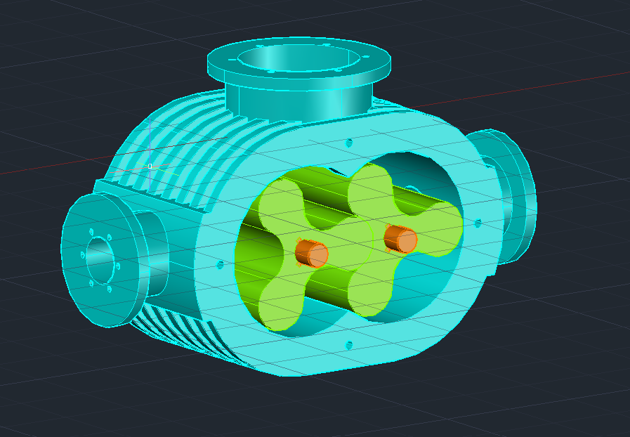

AutoCAD Mechanical
Twin-Lobe Blower Assembly
Rotary lobe blower with a finned housing, twin rotors on parallel shafts, and bolted flange ports on three faces.
- Multi-part assembly with housing and rotors
- Finned casing and flanged inlet/outlet geometry
- Shaft and bolt-hole alignment
- Sectioned view showing internal rotor clearance